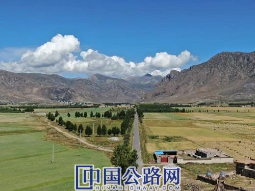

微官网
微官网
2020-12-03 西藏交通
全面推行“路长制”、提高对农村公路的日常管养标准……日前，拉萨市政府印发《拉萨市深化农村公路管理养护体制改革实施方案》，就加快建立农村公路管理养护长效机制提出明确要求。据了解，该《方案》12月1日正式实施。

到2022年农村公路经常性养护率达100%
《方案》明确，到2022年，拉萨市将基本建立“市级督导、以县为主、分级管理、乡村尽责”的农村公路管理养护体制机制，形成财政投入职责明确、社会力量积极参与的格局。农村公路治理能力明显提高，治理体系初步形成。农村公路通行条件和路域环境明显提升，交通保障能力显著增强。农村公路列养率和经常性养护率均达100%，农村公路年均养护工程比例不低于2%，中等及以上农村公路占比不低于75%。
到2035年，全面建成体系完备、运转高效的农村公路管理养护体制机制，基本实现城乡公路交通基本公共服务均等化，路况水平和路域环境根本性好转，农村公路治理能力全面提高，治理体系全面完善。
鼓励每条农村公路设置路长
《方案》要求，县（区）人民政府出台“路长制”实施方案，全面推行县、乡、村三级“路长制”，设立县级农村公路总路长，县、乡级党委或政府主要负责同志和村党支部或村委会主要负责人分别担任县、乡、村三级路长，负责相应农村公路“建管养运”工作。县、乡政府明确相应机构承担“路长制”运行的日常工作。鼓励每条农村公路设置路长。
同时，根据辖区内农村公路等级、数量和任务轻重等实际情况，落实1-2名农村公路养护管理工作人员，指导村民委员会组织好村道管理养护工作。村民委员会要充分发挥老支书、老村长、老党员、老模范和驻村工作队的积极性，按照“农牧民自愿、民主决策”的原则，采取一事一议、以工代赈等办法组织好村道管理养护工作。加强宣传引导，将爱路护路要求纳入乡（村）规民约。
逐步推进农村公路养护市场化改革
此次改革，拉萨市将人民群众满意度和受益程度、养护质量和资金使用效率作为衡量标准，逐步分类有序推进农村公路养护市场化改革。农村公路大中修等专业性工程，逐步通过市场化运作交由专业化养护队伍承担；农村公路的日常保养、绿化等非专业项目，鼓励通过分段承包、定额包干等模式交由沿线自然村（组）、家庭和个人组织实施，并按照优胜劣汰的原则，逐步建立相对稳定的群众性养护队伍。鼓励通过政府购买服务将农村公路日常养护交由第三方公司实施，在同等条件下优先考虑当地农牧民施工队和养护专业合作社，积极探索各种综合养护承包方式，逐步建立政府与市场合理分工的养护生产组织模式。鼓励通过签订长期养护合同、招投标约定等方式，引导专业养护企业加大投入，鼓励养护机械生产企业研发通用型、小型化养护机械，提高养护机械化水平。
全面强化农村公路管理养护资金保障
根据《方案》，农村公路养护属于市、县财政事权，资金原则上由市、县人民政府统筹财力安排，应将农村公路养护资金及管理机构运行经费和人员支出纳入市、县财政预算，确保所承担的支出责任落实到位。
具体来说，市级财政按照县道及重要专用公路每年3000元/公里、乡道及其他专用公路每年1500元/公里、村道每年900元/公里进行补助；县级财政按照不低于县道及重要专用公路每年2000元/公里、乡道及其他专用公路每年1000元/公里、村道每年600元/公里的标准安排资金，用于县、乡、村道及专用公路的日常养护。各县（区）可根据实际情况，在此基础上适当提高本级标准，其资金由县（区）承担，已高于上述标准的不得降低。
县级人民政府不断加大管理养护力度，保障农村公路日常养护及时到位，农村公路抢险保通费用由县级人民政府承担。旅游、厂矿、林场和产业园区等专业公路日常养护经费和管理养护工作由收益或使用单位按比例出资配套，出资比例由县（区）自行研究确定。空港新区由市财政全额承担。